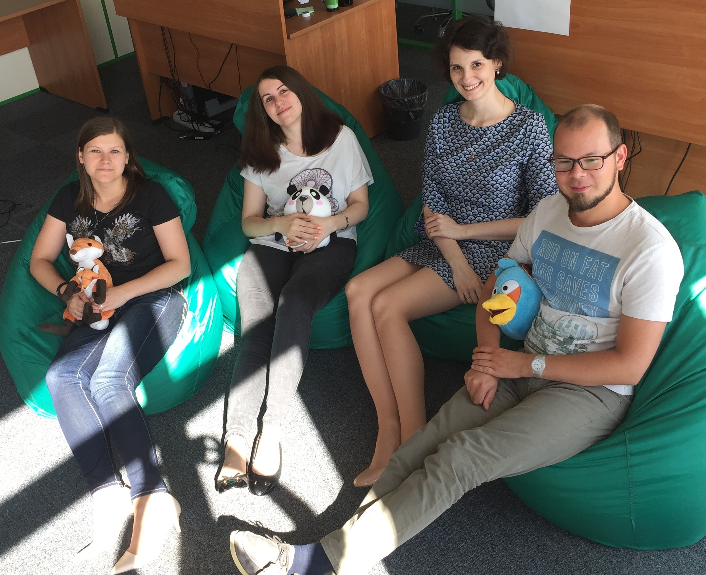
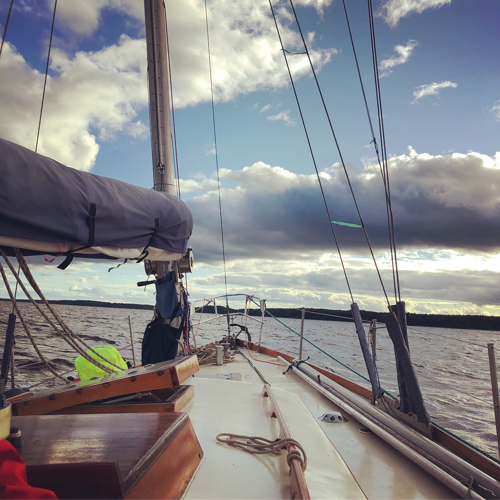
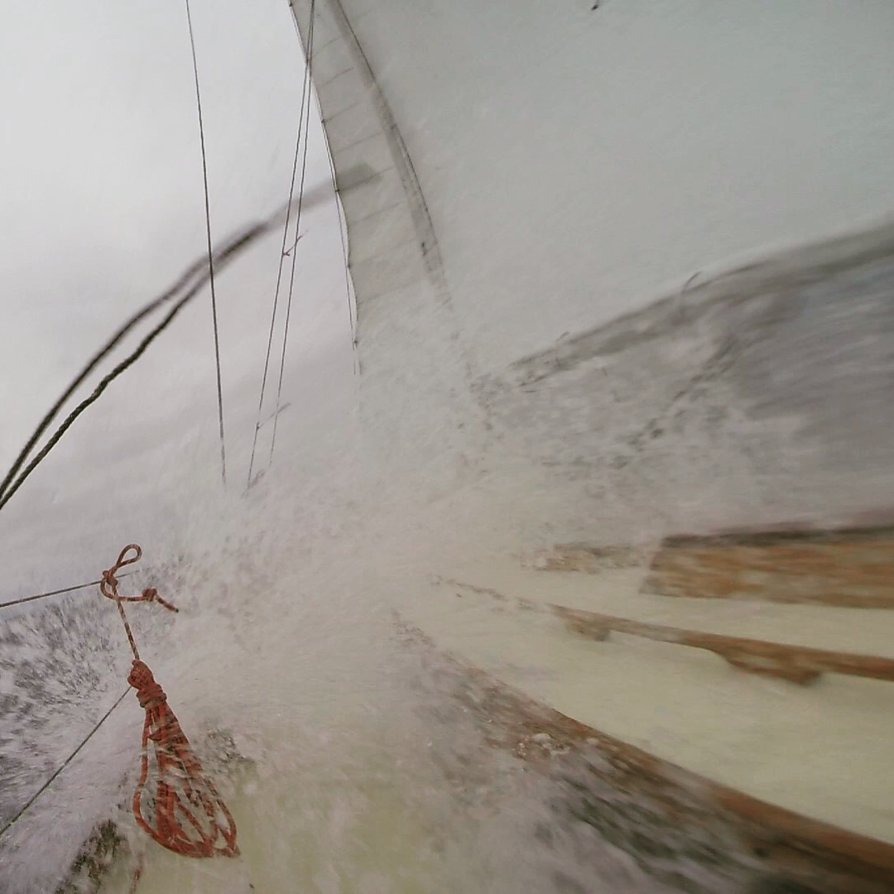
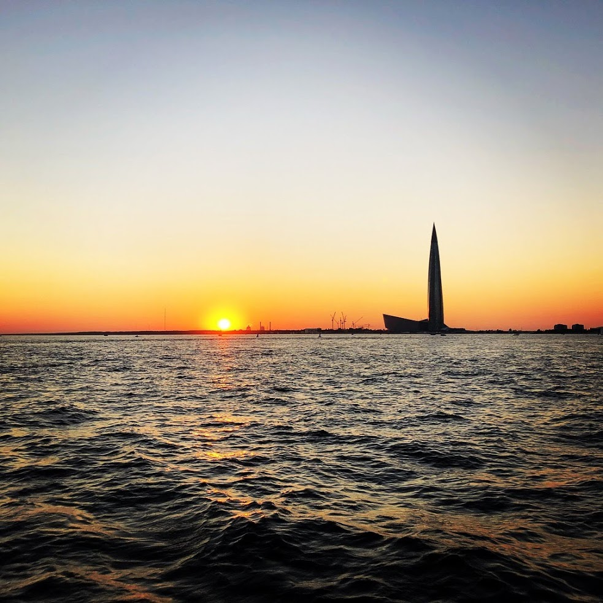
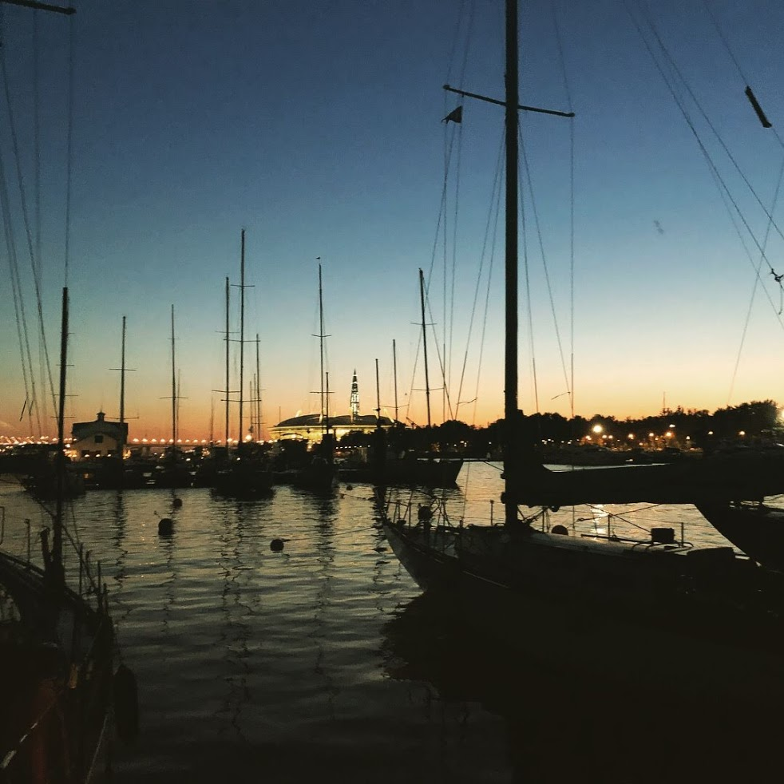

How I got there
Being a very passionate and self-driven person, I always try to find different projects and ideas to learn something new and gain an experience.
This leads me to my profession in web. First 3 years I made a simple Landing pages, websites and emails. Years later I understood that email development excites me the most and I love fixing Outlook bugs, testing new style updates and make great responsive emails. And this became my specialisation.
As one of my true passion is planning, I was extremely happy about my promotion to Team Lead.

That was time full of big discoveries and huge mistakes, but I knew I could do it.
And I did it!
I grew a wonderful team, that wasn't afraid to make mistakes and share their expertise and thoughts. Team that helped me learn how to delegate and trust. Team that became a family.
As a result of 3.5 years of my team lead responsibilities I implemented several significant changes:
- Built work processes with designers, marketing and field management teams
- Coached HTML remote team in Bucharest office
- Implemented Jira, Confluence documentation, deadline guides, code review and monthly meetings to share experience
- Dramatically decreased amount of tasks for HTML team, by organising HTML and CSS courses for marketing to solve simple tasks by their own
- Upgraded Marketo automatization and email scripting to ease Nurturing tracks management
But it was time to move on and I decided to try myself in startup bank company.
Here I have to do much more out of my responsibilities and skills, so I start training a new skill set in marketing automation, email campaigns and email marketing planning
Now I'm the only person responsible for Email Marketing full circle:
- Content creation, discovering new ideas for future content
- Communication and nurturing planning
- Creating email templates
- Managing and running Marketo triggers and batches
Hobbies
My life is not only about coding, it's also about travelling, sailing and enjoying every second with my friends and family.
I love watching football games, especially Barcelona's which I've supported since 2003. The atmosphere at the stadium, team spirit and the rhythm of game make this sport the best in the world for me.
A year ago I tried a new activity - sailing. It's a whole new world of enthusiasts who greet everyone who decides to join.
Boats, wind, everyday's challenges and amaizing sunsets - that's all sailing.



